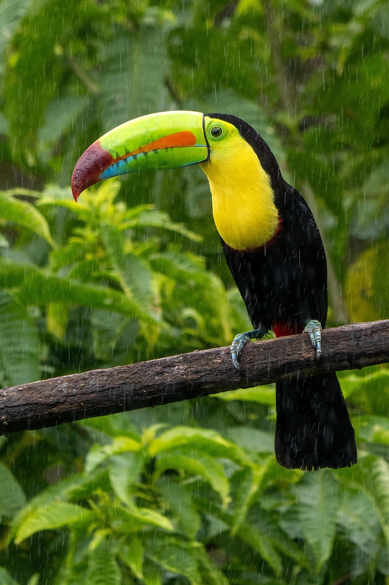
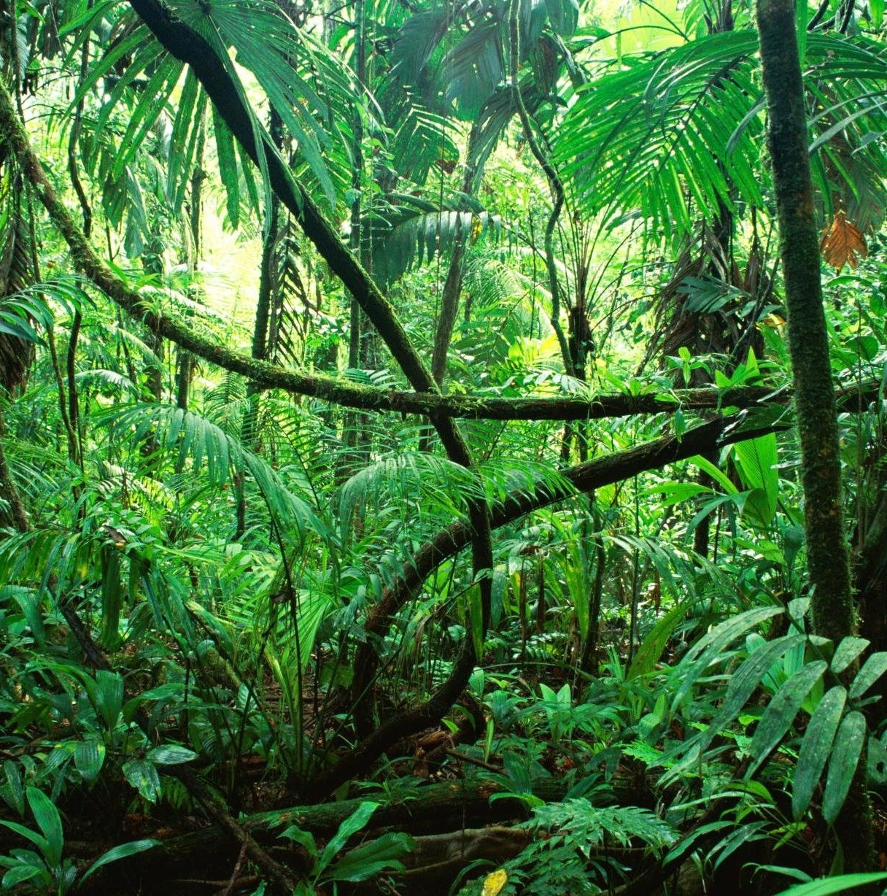
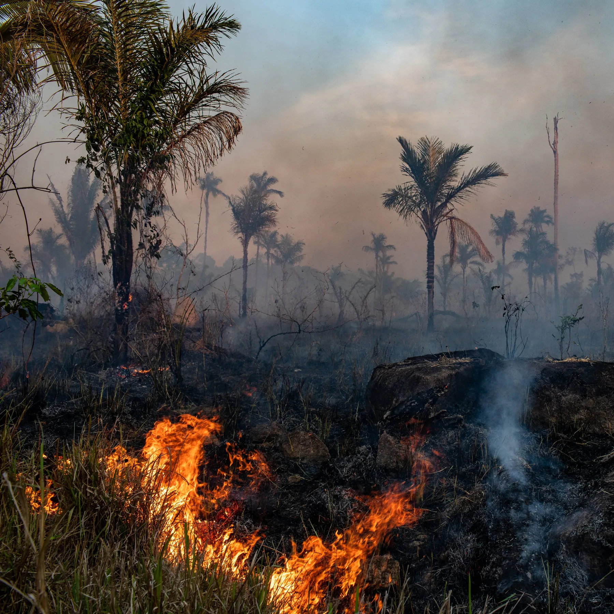

Miért nélkülözhetetlen?
Az esőerdők jelentősége
Az esőerdők bolygónk szárazföldi fajainak több mint felét rejtik, miközben a Föld felszínének csupán kis részét borítják. Ez a kivételes biodiverzitás nemcsak természeti örökség: élelmiszereink, gyógyszereink és tudásunk pótolhatatlan forrása.
A sűrű növényzet hatalmas mennyiségű szenet köt meg, szabályozza a víz körforgását, és távoli térségek csapadékviszonyaira is hatással van.
Az erdőirtás, a bányászat és a gyorsuló klímaváltozás azonban soha nem látott nyomást gyakorol ezekre az érzékeny rendszerekre. Minden eltűnő erdőfolttal fajok és évszázados ökológiai kapcsolatok vesznek el.
Ismerd meg a részleteket50%+
a szárazföldi fajokból
28%
a világ oxigéntermeléséből
390 M
hektár védett terület
10 M
hektár tűnik el évente
Egyensúlyban a természettel
Ismerj meg egy rejtett világot
Az esőerdő minden rétege más életközösségnek ad otthont, a talajszinttől egészen a napfényben fürdő lombkoronáig.


